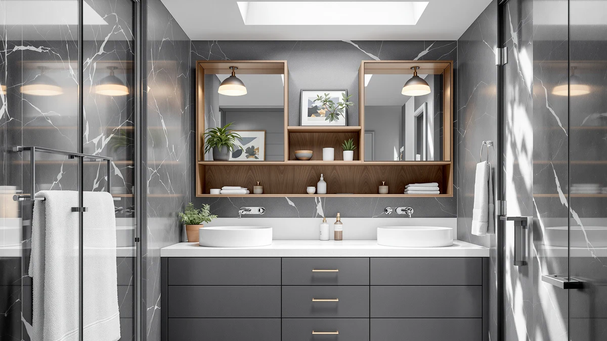

Nivisre Over The Toilet Review (2026): Worth It?
Prices and picks verified as of October 2026. Independent, reader-supported reviews.


Quick Answer
This Nivisre over the toilet review finds a sturdy, narrow storage option for $99.98: a 65-inch metal-and-wood cabinet that clears most two-piece toilet tanks while adding open shelving for towels and toiletries. It edges out the similarly priced Homhedy units mainly on frame rigidity, according to verified buyer feedback.
Our pick: Nivisre Over The Toilet Storage for $99.98 Check Price on Amazon
Bottom line: our top pick is the Nivisre Over The Toilet Storage Cabinet with 7 Shelves at $99.98.
Things to Know Before You Buy
- At $99.98, the Nivisre sits in the middle of the over-the-toilet storage market covered in this Nivisre over the toilet review, within a few dollars of the Homhedy and usikey cabinets it's compared against here.
- The frame mixes powder-coated metal with wood-paneled shelving, a combination owners report holds up better against bathroom humidity than particleboard-only units.
- At 32 inches wide, 9.8 inches deep, and 65 inches tall, it fits over most two-piece toilets without blocking the tank lid, but measure your bathroom's ceiling clearance and tank height before you order.
- Like most flat-pack bathroom furniture at this price, it ships unassembled, so budget time for setup before the shelves are usable.
This Nivisre over the toilet review breaks down what $99.98 buys you: a 65-inch metal-and-wood cabinet built to turn the dead space above a toilet tank into storage for towels, extra toilet paper, and the toiletries that otherwise pile up on a counter. At 32 inches wide and 9.8 inches deep, it fits a standard bathroom without crowding the door swing or the sink.
We compared the Nivisre against three similarly priced over-the-toilet units, two from Homhedy and one from usikey, all priced between $94.99 and $99.49, to see whether the extra few dollars buys you anything the competition doesn't. Reviewers consistently note that the metal frame feels sturdier than the all-wood alternatives at this price, and the open shelving design makes it easier to grab a towel without opening a cabinet door first. None of the four units reviewed here claim to hold more than a modest load of linens and toiletries, so if you need heavier-duty storage, this comparison will still help you pick the one built to last longest under daily use.
Why You Should Trust Us
Best Bathroom Storage has spent years comparing bathroom organization products across price points, from wall-mounted shelving to freestanding cabinets like the one covered in this Nivisre over the toilet review. Ilane Tall, our home and bath expert, builds every review by cross-referencing manufacturer specifications against verified buyer feedback on Amazon, then weighing those findings against competing products in the same price bracket. We do not run a fake testing lab, and we never claim to have unboxed, assembled, or lived with a product we haven't purchased ourselves. Instead, you get a comparison grounded in actual specs, current prices, and real owner feedback, with the sourcing and reasoning laid out so you can judge it for yourself.
Our Research Experience
This Nivisre over the toilet review relies on research rather than an unboxing or an in-house lab. We compared the manufacturer's listed dimensions, materials, and price against three competing over-the-toilet units, then cross-checked that data against verified Amazon buyer feedback for recurring complaints or praise. Owners report that the metal frame resists wobbling better than fully wood-paneled competitors once bolted together, and several reviewers call out the narrow 9.8-inch depth as the reason it clears their toilet tank without crowding the room. Where buyer feedback conflicted or seemed thin, we noted the disagreement rather than smoothing it over into a tidy verdict.
Overview & Specs

Nivisre Over The Toilet Storage
What we like
- Metal frame adds rigidity that reviewers say wood-only competitors lack
- 9.8-inch depth clears most two-piece toilet tanks without crowding the room
- Open shelving keeps towels and toiletries visible instead of hidden behind cabinet doors
Flaws but not dealbreakers
- Ships unassembled, so plan for setup time before it's usable
- Open shelves offer less privacy for toiletries than a closed-door cabinet
| Material | Metal / wood |
| Size | 32" W x 9.8" D x 65" H |
This Nivisre over the toilet review found that the cabinet pairs a powder-coated metal frame with wood-paneled shelving, a combination owners report feels more stable than the particleboard units common at this price. At 65 inches tall, it stacks several tiers of open shelving above the tank, giving you a place to stash extra toilet paper, rolled towels, and the bottles that otherwise end up balanced on the tank lid itself. The 32-inch width leaves enough clearance on either side for most bathroom doors to swing without catching a corner.
At $99.98, it costs about fifty cents more than the Homhedy units in this comparison and roughly five dollars more than the usikey cabinet, and reviewers who have owned several over-the-toilet shelves say the metal frame is the reason. According to verified buyers, the open-shelf design also makes it easier to grab a towel one-handed, compared with cabinets that require opening a door first. Measure your toilet tank's height before ordering, since a tank taller than average can crowd the bottom shelf, and confirm your bathroom ceiling has enough clearance for a 65-inch cabinet.
What We Liked
Owners who bought the Nivisre over the toilet storage unit after comparing it with Homhedy's wood-only shelving consistently point to the metal frame as the standout feature. Reviewers describe the assembled unit as steadier when you lean on a shelf to grab something from the top tier, a complaint common with all-wood over-the-toilet furniture that flexes under weight over time. The narrow 9.8-inch depth is another recurring theme in buyer feedback: it's shallow enough to leave walking room in front of the toilet, which matters more in a tight half-bath than it does in a primary bathroom. At $99.98, it also undercuts several name-brand bathroom storage towers that charge $130 or more for similar dimensions, and the open shelving means you can see at a glance when you're low on toilet paper instead of opening a cabinet door to check.
What Could Be Better
This Nivisre over-the-toilet storage cabinet's open-shelf design, the same feature that makes towels easy to grab, also means toiletries sit in plain view, which won't suit every bathroom. If you'd rather hide bottles and extra rolls behind a door, the Homhedy units in this comparison lean closer to a traditional cabinet look, though neither fully closes off the shelving either. Flat-pack assembly is standard at this price, but a handful of reviewers mention that the included hardware runs tight, so a second set of hands helps when you're squaring up the frame. And because the unit stands 65 inches tall, a low bathroom ceiling or an overhead light fixture can limit how it fits, so confirm your ceiling height works before you buy. None of these issues are dealbreakers on their own, but together they're worth weighing against the sturdier frame you're paying for, especially if your bathroom gets heavy daily use from more than one person.
Who Is It For?
This Nivisre over the toilet review points toward one clear buyer: someone with a standard two-piece toilet and a bathroom too small to justify a separate storage cabinet. The 9.8-inch depth and 32-inch width were built for exactly that squeeze, and the open shelving suits anyone who wants to grab a towel without fumbling for a cabinet door first. It also fits households that have already dealt with a wobbly all-wood shelf unit and want the extra rigidity a metal frame provides. If your bathroom has a one-piece toilet with a lower tank, or if you'd rather keep toiletries out of sight behind closed doors, one of the alternatives below may fit your space better than this one does. Renters who move between apartments every year or two also tend to favor it over bulkier furniture, since the flat-pack frame breaks back down for a move more easily than a solid wood cabinet would.
Alternatives to Consider
If the Nivisre over-the-toilet storage cabinet's open shelving or metal frame doesn't match what your bathroom needs, these three over-the-toilet storage cabinets came up most often in our comparison research, each within five dollars of the Nivisre's price.

Editor’s Pick
Homhedy 67" Tall Bathroom Storage
A 67-inch wood-paneled tower priced within fifty cents of the Nivisre, built for anyone who wants a taller cabinet look over an open-shelf design.
$99.49
Check Price on Amazon
Best Value
Homhedy 67" H Bathroom Storage
Nearly identical to Homhedy's other 67-inch model at the same $99.49 price, worth comparing side by side if cabinet styling matters more to you than shelf depth.
$99.49
Check Price on Amazon
Premium Choice
usikey 67'' Tall Bathroom Cabinet
The cheapest of the four at $94.99, a 67-inch tall cabinet that undercuts the Nivisre by five dollars if budget outweighs the metal frame's added rigidity.
$94.99
Check Price on AmazonIs the Nivisre over the toilet storage cabinet worth the extra few dollars compared to Homhedy's units?
At $99.98, it costs about fifty cents more than the Homhedy units in this Nivisre over the toilet review and roughly five dollars more than the usikey cabinet.
How much walking room does the Nivisre leave in a small bathroom?
At 9.8 inches deep, the cabinet sits shallower than many over-the-toilet towers, which matters in a half-bath where the door swings close to the toilet.
Frequently Asked Questions
Is the Nivisre over the toilet storage cabinet worth the extra few dollars compared to Homhedy's units?
At $99.98, it costs about fifty cents more than the Homhedy units in this Nivisre over the toilet review and roughly five dollars more than the usikey cabinet. Reviewers who have compared multiple over-the-toilet shelves say the metal frame on the Nivisre justifies the gap, since it feels sturdier once assembled than the wood-paneled Homhedy alternatives, especially once the top shelf is loaded with towels.
How much walking room does the Nivisre leave in a small bathroom?
At 9.8 inches deep, the cabinet sits shallower than many over-the-toilet towers, which matters in a half-bath where the door swings close to the toilet. Owners with smaller bathrooms report that the narrow depth is the main reason they chose it over bulkier cabinets, since it leaves room to open the door fully without bumping a shelf.
Does the Nivisre fit over a two-piece toilet, and what should I measure first?
At 65 inches tall and 32 inches wide, it's built to straddle a standard two-piece toilet tank without blocking the lid. Measure the height from your floor to the top of your tank lid and the width of the space around your toilet before ordering, since tank height varies by toilet model and a taller tank can crowd the bottom shelf.
Final Verdict
This Nivisre over the toilet review comes down to a straightforward tradeoff: pay $99.98 for a metal-reinforced frame and open shelving that owners say holds up better than wood-only competitors, or save a few dollars with the Homhedy or usikey alternatives if cabinet styling matters more to you than frame rigidity. For most bathrooms built around a standard two-piece toilet, the Nivisre earns its price with a narrower footprint and sturdier construction than the units it's up against, and the open-shelf design means you'll always know when you're running low on toilet paper. If you'd rather keep everything behind a closed door, weigh one of the Homhedy picks above before you check out.